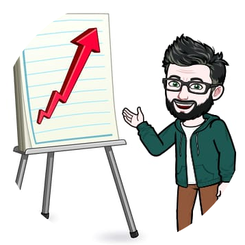
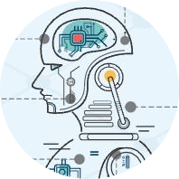
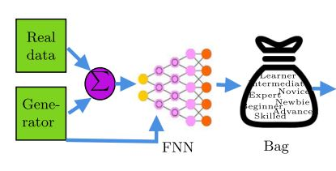
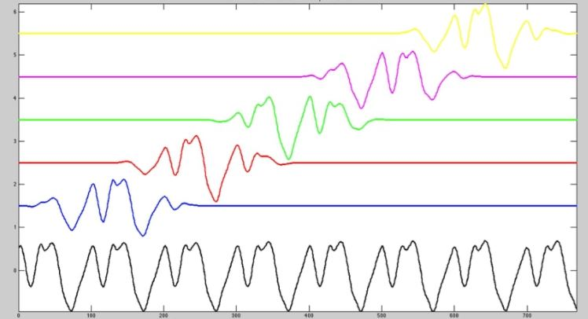

Que puedo aportar
Python
Docente y formador de Python con amplia experiencia en procesamiento de imagenes y machine learning. Uso de librerias como Pandas, Numpy, SciPy, Scikit-learn, Matplotlib, TensorFlow y Keras.
Matemáticas
Como ingeniero electrónico y magister en ingenieria cuento con amplios fundamentos en matematicas cursos de algebra lineal, ecuaciones diferenciales, metodos numéricos, análisis numérico, calculo multivariado y optimización.
Estadística
Se de la importancia de la estadística y la probabilidad en cualquier organización, pasión inducida por el profesor de la UNAL Julio Fernando Suarez en el curso de analísis multivariado con R. Cursos de estadística y probabilidad, estadística descriptiva e inferencial, analísis multivariado, analísis y recolección de datos.

Visualización
La estadística con la correcta visualización es la herramienta más poderosa de los científicos de datos nos permite mostrar datos complejos de una forma sencilla e inferir a partir de ellos. No nos digamos mentiras muchos modelos de ML ya estan imprementados pero la importancia es aprender a saber que valor sacarles a los datos.
Businnes intelligence
La inteligencia de negocios (BI) es un conjunto de herramientas y tecnologías que facilitan la obtención rápida y sencilla de datos provenientes de difetentes fuentes SQL NOSQL JSON, para la toma de decisiones que finalmente se convierten en conocimiento para los gerentes del negocio (plata). Las herramientas que manejo son: Power BI, Tableau y Excel.

Machine Learning
En ML he utilizado técnicas no supervisadas y supervisadas para el análisis de datos (clústeres, reducción de dimensionalidad, clasificación, regresión y Ml por refuerzo. He orientado clases de aprendizaje de maquina y desarrollado varios proyectos orientados a la predicción y clasificación de datos. Entre los temas a destacar esta la metodología llamada Bag of Expert (BOE).
Consultor
Aunque no he trabajo directamente en empresas como científico de datos he asesorado a estadistas, economicos, matemáticos e ingenieros en el uso de técnicas de visión artificial y machine learning para la solución de problemas por medio de metodologías que han usado técnicas de Template Matching, registros, Transformers, múltiples expertos entre otros. Aunque no puede hablar ampliamente del tema por su carácter reservado podemos tomarnos un café, depronto te puedo ayudar.
Visión artificial
Apasionado por el procesamiento digital de imágenes desde el pregrado (2009), he orientado cursos de procesamiento digital de imágenes en la UNAL y trabajado con nubes de puntos, imágenes hiperespectrales, librerías como OpenCV, PCL, ITK, VTK, experiencia en adquisición, recolección y análisis de estos datos. Los cursos que he visto son: tópicos avanzados de visión, procesamiento de imágenes tridimensionales, procesamiento digital de imágenes y visión artificial.
Investigador
Soy un apasionado por las nuevas tecnologías, con hambre de conocimiento e investigación, considero que aprendo rápido y me adapto de una forma sencilla a los retos. Busco que las cosas difíciles sean fáciles y de la misma manera trato de explicar lo complejo de una forma sencilla. Habilidad adquirida de enseñar a niños de colegio, me considero autodidacta y con capacidad lógica para proponer diferentes soluciones a los problemas encontrados.
Portafolio


Múltiples Expertos

Imagen ilustrativa
Consultoria -Automatización de Fallas en Transformadores
Imagen ilustrativa
Opencv template matching
Contact
Ubicación
Medellin, Colombia
Telefono:
(+57) 321 7383757
jdtamayoq@gmail.com